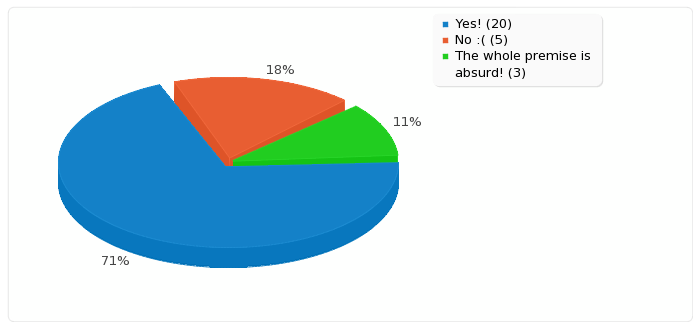

LimeSurvey CuePoint Forms on Player
This demo, shows a survey at 6 seconds into the video. This is an example of custom integration, not an out of the box feature. Reports are aggregated into limeSurvay.
Sample report:
